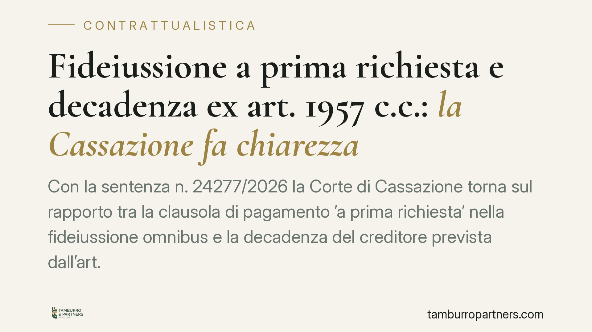

Fideiussione a prima richiesta e decadenza ex art. 1957 c.c.: la Cassazione fa chiarezza
Con la sentenza n. 24277/2026 la Corte di Cassazione torna sul rapporto tra la clausola di pagamento 'a prima richiesta' nella fideiussione omnibus e la decadenza del creditore prevista dall'art. 1957 c.c. La questione conta perché incide sulla sopravvivenza della garanzia: capire quando il creditore perde il diritto di escutere il fideiussore è decisivo per banche, garanti e imprese.

Il contesto
La fideiussione è la garanzia con cui un soggetto (il fideiussore) si obbliga verso il creditore a rispondere del debito altrui. Nella pratica bancaria è diffusa la cosiddetta fideiussione *omnibus*, che copre tutte le obbligazioni presenti e future del debitore principale entro un importo massimo.
A questa garanzia si affianca spesso la clausola di pagamento "a prima richiesta" (o *a prima domanda*): il garante deve pagare non appena il creditore lo richiede, senza poter opporre le eccezioni relative al rapporto principale. È una clausola che avvicina la fideiussione al contratto autonomo di garanzia, rendendola più simile a uno strumento di liquidità immediata.
La sentenza n. 24277/2026 affronta un nodo ricorrente: questa clausola esclude anche l'operatività della decadenza prevista dall'art. 1957 c.c.?
Inquadramento normativo
L'art. 1957 c.c. stabilisce che il fideiussore resta obbligato anche dopo la scadenza dell'obbligazione principale, purché il creditore, entro sei mesi, abbia proposto le sue istanze contro il debitore e le abbia con diligenza continuate. In mancanza, il creditore decade dalla garanzia: perde cioè il diritto di escutere il fideiussore.
La norma tutela il garante, evitando che rimanga esposto a tempo indeterminato per l'inerzia del creditore. Si tratta però di una previsione derogabile: le parti possono validamente rinunciarvi in via contrattuale.
Il punto controverso è se la clausola "a prima richiesta" comporti, di per sé, una rinuncia implicita al termine dell'art. 1957 c.c. La Cassazione ha adottato un approccio prudente: la clausola di pagamento a prima richiesta non implica automaticamente la deroga alla decadenza. L'inserimento di una simile pattuizione, infatti, riguarda le modalità e i tempi del pagamento e l'inopponibilità delle eccezioni, ma non travolge di per sé la disciplina della decadenza, che risponde a una diversa esigenza di tutela.
Cosa cambia in concreto
La distinzione ha effetti pratici rilevanti.
Per il creditore (tipicamente la banca): la presenza della clausola "a prima richiesta" non è un salvacondotto. Se il testo contrattuale non contiene anche una espressa rinuncia al termine dell'art. 1957 c.c., il creditore rischia di decadere dalla garanzia qualora non attivi tempestivamente le proprie iniziative contro il debitore principale.
Per il fideiussore: la clausola non lo priva della protezione dell'art. 1957 c.c., salvo che il contratto preveda una rinuncia chiara e specifica. Chi ha prestato garanzia può quindi verificare se, nel proprio caso, il creditore sia decaduto per non aver agito nei termini.
Per chi redige o negozia i contratti di garanzia: la lezione è che nulla può essere lasciato all'implicito. Se l'intento è quello di escludere la decadenza, occorre una previsione autonoma ed esplicita, distinta dalla clausola sul pagamento a prima richiesta.
Cosa fare in concreto
- Verificate il testo contrattuale: controllate se la fideiussione contiene, oltre alla clausola "a prima richiesta", una rinuncia espressa al termine dell'art. 1957 c.c. Sono due pattuizioni distinte.
- Se siete creditori, monitorate le scadenze: attivate le istanze contro il debitore principale entro i sei mesi e documentate la diligente prosecuzione, per non incorrere nella decadenza.
- Se siete garanti, ricostruite la tempistica delle azioni del creditore: valutate se sia maturata la decadenza prima di dare seguito a una richiesta di pagamento.
- In fase di redazione, esplicitate la volontà delle parti: consigliamo di formulare in modo autonomo l'eventuale rinuncia alla decadenza, evitando clausole ambigue o meramente di stile.
- Prima di agire o di pagare, sottoponete il contratto a una verifica tecnica: la qualificazione della garanzia (fideiussione o contratto autonomo) e la portata delle clausole incidono in modo decisivo sull'esito.
Una riflessione conclusiva
La pronuncia conferma un principio di sostanza: le tutele di legge non si perdono per effetto di clausole generiche. La chiarezza redazionale, tanto più in materia di garanzie, resta il presidio migliore contro il contenzioso.
---
*Contributo informativo a cura di Tamburro & Partners - Avv. Giuseppe Tamburro. Non costituisce parere legale.*
Ogni contratto ha il suo equilibrio.
Se vuoi una revisione delle clausole o una redazione su misura, scrivi allo studio. Ti rispondiamo entro un giorno lavorativo.